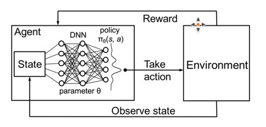
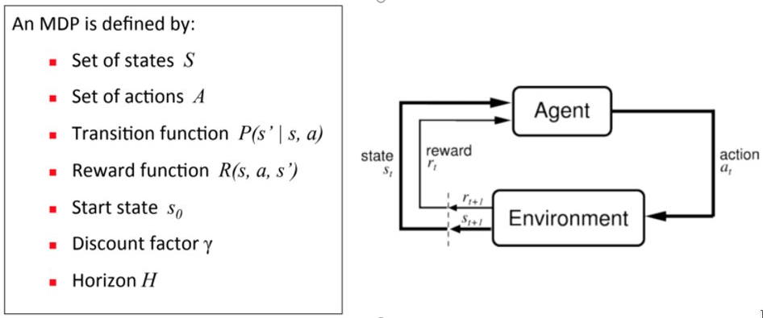

LIACS Robotics 2023
This workshop reviews several basics of deep reinforcement learning when training agents in some environments in OpenAI gym.
Open the terminal and go to this RL-workshop directory (Note: use Python 3.8.10 - 3.8.16) :
# first install swig:
sudo apt install swig
# Skip the following steps if you do already have python3.8.* available!
# Otherwise, you should install for example python3.8.16
sudo apt update && sudo apt upgrade
sudo add-apt-repository ppa:deadsnakes/ppa
sudo apt install python3.8.16
sudo apt install python3.8-distutils
sudo apt install python3.8-dev
# If you do not have the code already, get the workshop code and after unpacking go to the directory RL_Workshop
wget 'https://liacs.leidenuniv.nl/~bakkerem2/robotics/RL_Workshop.zip'
unzip RL_Workshop.zip
# create a virtual environment 'env'
virtualenv env --python=python3.8
source ./env/bin/activate
# Always upgrade pip!
pip install --upgrade pip
# Install the necessary packages.
chmod u+x install.sh
./install.sh
# Do a 'pip list' to check the packages installed in your virtual environment.
# If Box2D is not in the list, you should build and install the wheel for Box2D-2.3.10:
pip install https://github.com/pybox2d/pybox2d/archive/refs/tags/2.3.10.tar.gz
# start the workshop
python src/RLWorkshop.py
Run Windows PowerShell as Administrator and execute:
Set-Executionpolicy Unrestricted
Select the answer [Y] and cd to RL-workshop directory
Note it is assumed that the following programs are installed:
- use Python3.8.10
- Swig4.0.2: download swigwin4.0.2 and add the path to the
directory with swig.exe to the env-path of the PowerShell using
$env:Path += ";PathtoSwigExe"Then setup the virtual environment and install the necessary
packages:
# If you do not have the code already, get the workshop code:
wget 'https://liacs.leidenuniv.nl/~bakkerem2/robotics/RL_Workshop.zip'
unzip RL_Workshop.zip
python -m venv env
env\Scripts\Activate.ps1
python -m pip install --upgrade pip
pip install https://github.com/pybox2d/pybox2d/archive/refs/tags/2.3.10.tar.gz
# Install required packages (this can take a while)
.\install.bat
python src/RLWorkshop.py
Reinforcement learning is a framework for learning sequences of optimal actions. The main goal is to maximize the cumulative reward that the agent receives over multiple timesteps.
 
Reinforcement learning can be understood using the concepts of agents, environments, states, actions and rewards, all of which will be explained below. Capital letters tend to denote sets of things, and lower-case letters denote a specific instance of that thing; e.g. A is all possible actions, while a is a specific action contained in the set.
So environments are functions that transform an action taken in the current state into the next state and a reward; agents are functions that transform the new state and reward into the next action. We can know the agent’s function, but we cannot know the function of the environment. It is a black box where we only see the inputs and outputs. Reinforcement learning represents an agent’s attempt to approximate the environment’s function, such that we can send actions into the black-box environment that maximize the rewards it gives out.
The reinforcement learning algorithm that you are going to be using today is Proximal Policy Optimization (PPO) which is one of the best performing RL algorithms to date. It is widely used in various robotics control tasks and it had many successes when applied to complicated environments:
This algorithm uses two neural networks:
When trained together these networks can solve a wide variety of tasks and are perfectly suited for continuous action and state spaces. The policies produced by this algorithm are stochastic, as instead of learning a specific action, given a state, the agent learns the parameters of a distribution of actions from which the actions are sampled. Therefore the actions that your agent produces are most likely going to be different each time you retrain the agent, even when using a constant random seed for network weight initialization.
For your convenience you are provided with an interface that makes it easy to control the internal tensorflow training code and set up the neural networks and the reinforcement learning parameters to solve the problems. To run it:
python3 src/RLWorkshop.py
Interface guidelines:
Apart from the neural net architectures the other parameters of the environments can be changed during run-time, therefore you can experiment to achieve better performance (or worse). Each parameter has a tool tip that explains its use and the general guidelines of how they should be configured depending on the complexity of the problem.
This OpenAI gym environment is a great illustration of a simple reinforcement learning problem where the agent has to take detrimental actions that give negative rewards in the short term in order to get a big reward for completing the task (a primitive form of planning). It has a very simple state and action space: one action [-1:1] indicating the velocity to left or right, and a state consisting of a vector: [position, velocity]. As the agent moves towards the goal (flagpole) it receives a positive reward, as it moves away from it it receives a negative reward. The agent does not have enough torque to just go uphill straight away.
Task: Try to find good learning parameters and neural network architectures that will solve the environment (consistently reaching the flagpole) with a reward around 90. Note: Given the right parameters the environment can be solved in 1-2 network updates.
Hints:
This OpenAI gym environment shows a slightly more complicated agent. The landing pad is always at coordinates (0,0). The coordinates are the first two numbers in the state vector. The reward for moving from the top of the screen to landing at the landing pad at zero speed is about 100..140 points. If the lander moves away from the landing pad it loses part of the reward. Episodes finish, if the lander crashes or comes to rest, receiving additional -100 or +100 points. Each leg ground contact is +10 points. Firing the main engine is -0.3 points for each frame. Solving the problem is 200 points. Landing outside the landing pad is possible. Fuel is infinite, so an agent can learn to fly and then land on its first attempt. Action is two real values vector from [-1:1]. The first value controls the main engine, [-1:0] engine is off, [0:1] throttle from 50% to 100% power. Engine can't work with less than 50% power. The second value is used to fire the left or right engine: [-1:-0.5] fire left engine, [0.5:1.0] fire right engine, [-0.5~0.5] engine is off.
Task: Try to propose good learning parameters for which you expect to achieve a good reward on average.
Hints:
Submit a small pdf-report (max 1 page including images) of your findings and submit it to Bright space. The focus here is on explaining what you did and why, what the whole idea/strategy of your approach is and how your assessment of that is. Try to give some experimental evidence (reward screenshot or gif of the agent) for what you conclude.
If you have any problems running the environments, spot bugs in
the code or if you have questions regarding reinforcement learning
workshop in general, don't hesitate to contact us. There are
several time-slots available on machines with the installed
workshop. Contact: erwin@liacs.nl